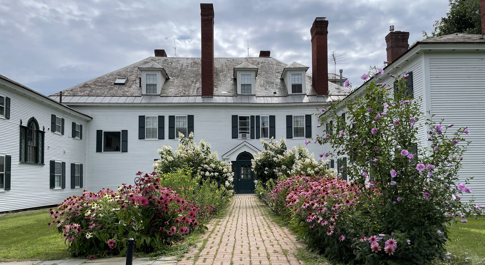

By car: The Upper Valley is easily accessible by car from the Boston and NYC metro areas.
By bus: The Dartmouth Coach runs several busses every day between the Upper Valley and both Boston (3 hours) and NYC (5 hours). The coaches are comfortable and, if you have any luck, they'll be playing
The Intern on the tiny bus screens. Dropoff locations are in Hanover and Lebanon.
By plane: We recomend flying into Boston Logan and either renting a car, or taking the Dartmouth Coach (see above). The coach does direct pickup from all Logan terminals.
Winsor Inn Rooms are available in the Inn for the family of the bride and groom
Local Lodging Option #1 Description
Local Lodging Option #2 Description
Local Airbnbs Rooms are available in the Inn for the family of the bride and groom